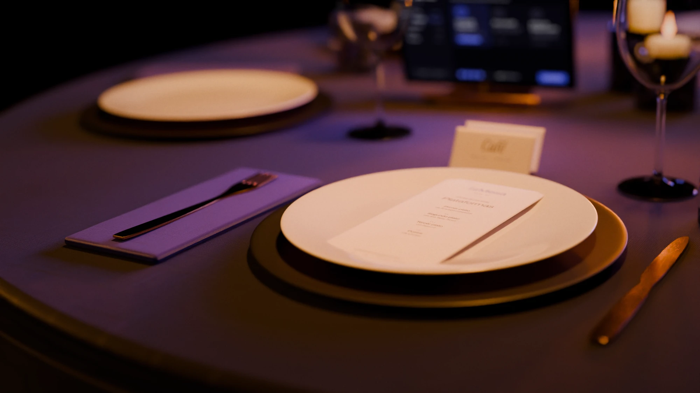
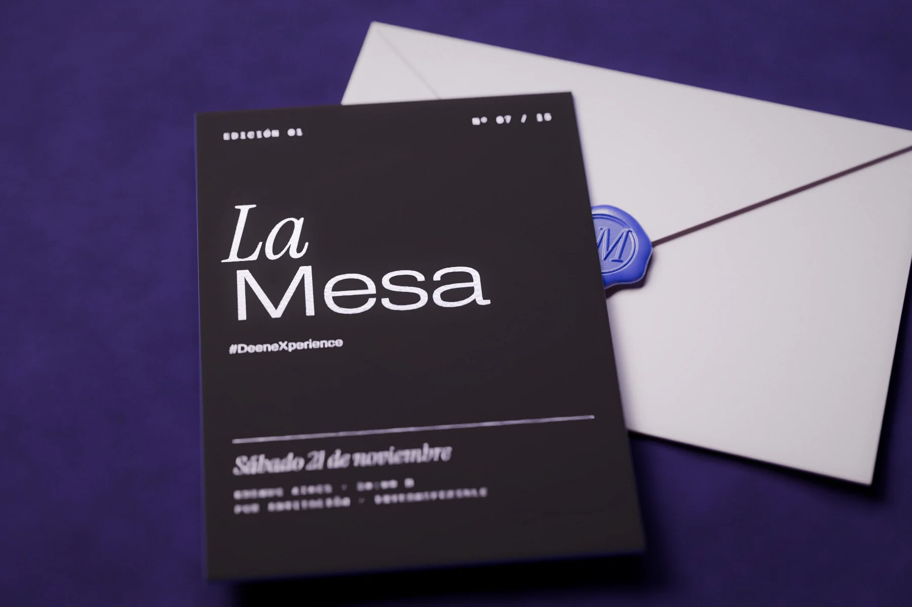
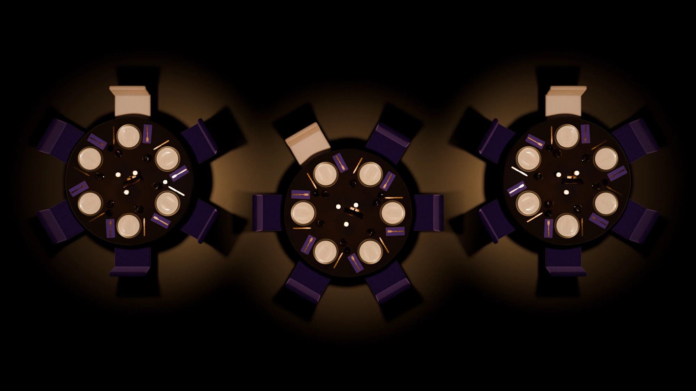
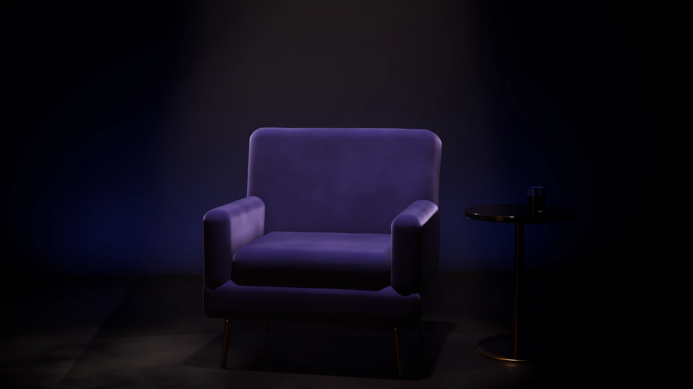
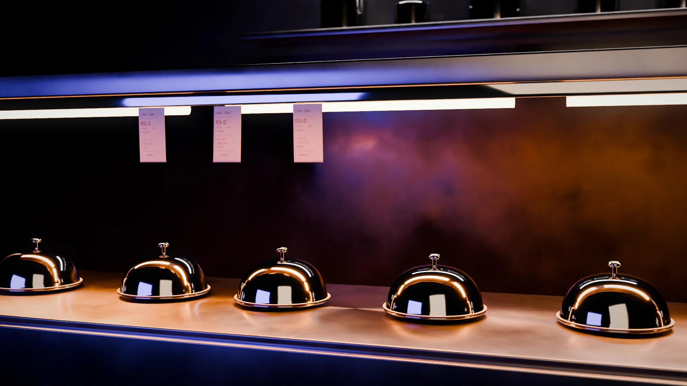
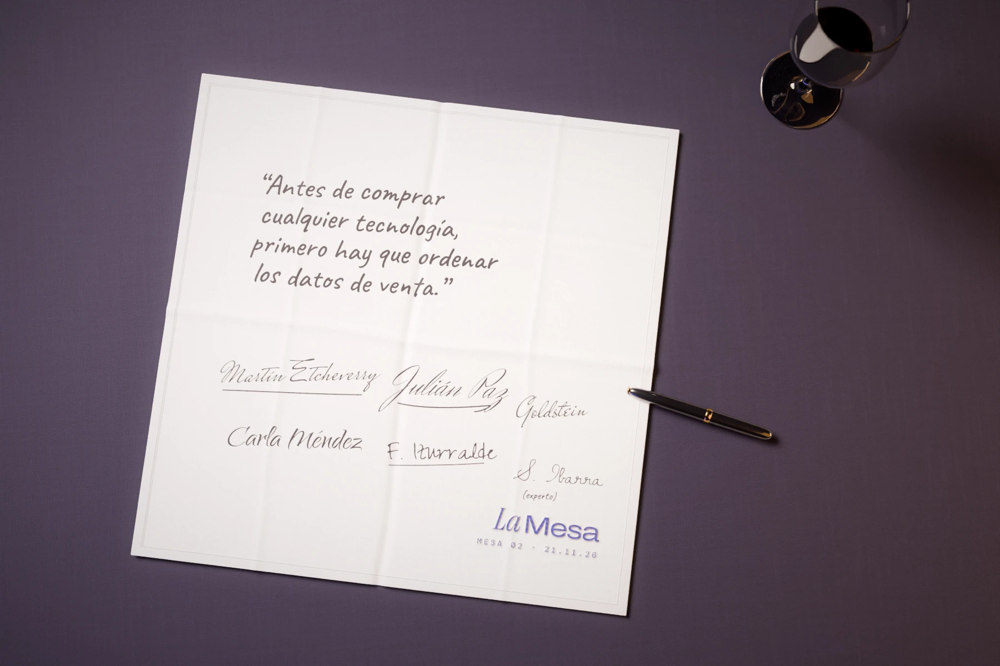
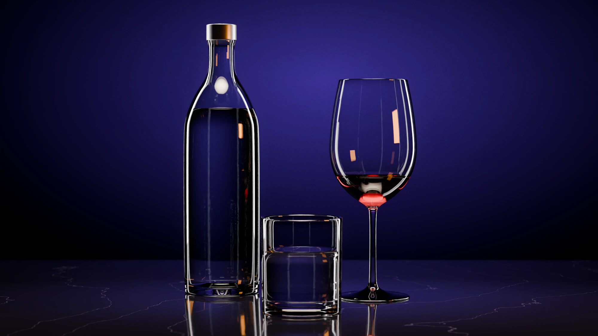
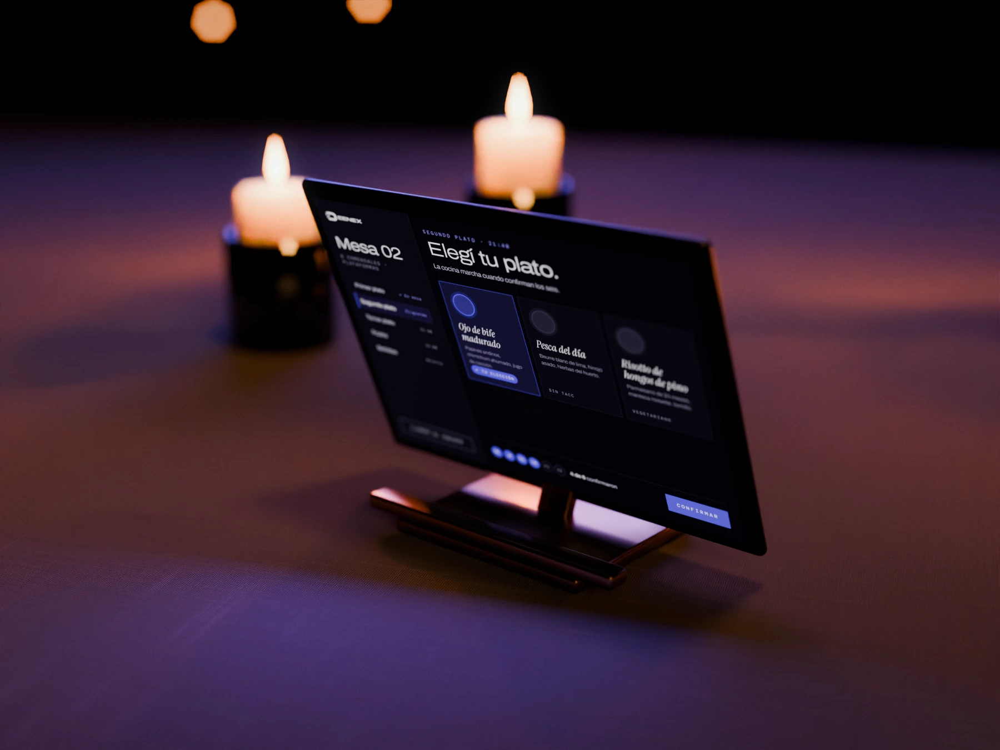

#DeeneXperience
#DeeneXperienceLaMesa
Sentate a la mesa con los CEOs de las cadenas gastronómicas más grandes del país y los referentes tech del sector.
- 15
- 3
- 3
- 1

Los CEOs de las cadenas más grandes del país no tienen dónde hablar entre ellos. Esta noche existe para eso.

Las decisiones de tecnología más difíciles se toman solas.
Los CEOs de las cadenas más grandes del país toman todos los días decisiones de tecnología que mueven millones, y casi siempre las toman solos. Tienen proveedores que les venden, consultores que les cobran y eventos donde los miran, pero no tienen un lugar donde sentarse con otros que están viviendo lo mismo. La Mesa existe para eso: cada uno llega con el desafío que hoy tiene su compañía y se va habiéndolo trabajado con quienes mejor lo pueden entender.
Todo lo demás se construye sobre estas tres cosas.
No son detalles de producción. Si alguna se cae, la noche deja de funcionar.
- Regla01
Nadie compite con nadie
Una sola marca por categoría. No hay dos cadenas de hamburguesas, ni dos de café, en la misma sala.
Es lo que permite que digan números reales. Con un competidor enfrente, nadie habla.
- Regla02
Tres expertos que rotan
Tres referentes de tecnología, elegidos para estos desafíos. Uno por mesa, y cambian de mesa con cada plato.
Al final de la noche, cada CEO trabajó su desafío con los tres.
- Regla03
Cada uno trae su desafío
Una semana antes, cada CEO nos manda el desafío de tecnología que hoy tiene por delante su compañía.
Con esos quince desafíos armamos las mesas. Se habla de sus problemas, no de un temario nuestro.
Los temas de la noche los escriben ellos.
La cena no se diseña en un escritorio. Se diseña con los quince desafíos que mandan una semana antes.
- 15
Desafíos que entran
Cada CEO manda uno, en una frase: el problema de tecnología que hoy tiene su compañía. No teoría ni tendencias. Lo que le está costando plata.
- 1
Una lectura, buscando patrones
Las leemos todas juntas y vemos qué se repite. Donde tres cadenas distintas coinciden, hay un tema de mesa. Donde alguien está solo, le buscamos el experto que mejor le sirve.
- 3
Temas que salen
De esos patrones salen los tres temas de las mesas, qué experto va a cada una y quién se sienta al lado de quién. Cuando llegan, la conversación ya está diseñada sobre lo que ellos mismos plantearon.
Y de nuestro lado queda un mapa de lo que la industria no sabe resolver, escrito por los quince CEOs que más locales manejan del país.
Cómo pasa la noche.
Nueve momentos, en orden. Tocá cualquiera para ver qué está pasando en el salón.





La puerta
Entran de a uno y la cámara ya está grabando. Tomás Fonzi los recibe en la puerta, los saluda por su nombre y los va presentando entre ellos. Nadie llega y se queda parado solo con una copa: desde el primer minuto hay alguien conectando gente.
La llegada no se deja librada al azar. Es la primera escena de toda la pieza.
El salón espera con los nombres puestos y el menú de cada uno en su lugar.
Tres servilletas. Tres conclusiones firmadas.
Es lo único de la conversación de las mesas que se publica. Y es la imagen que cierra la noche.
- 5′
Una conclusión por mesa
Antes del postre, cada mesa tiene cinco minutos para ponerse de acuerdo en una sola frase.
- 6
La escriben y la firman
En una servilleta de tela con el logo de La Mesa. Firman los cinco CEOs y el experto de esa mesa.
- 1
Un abanderado
La mesa elige a uno. Se para, lee lo que firmaron y cuenta por qué llegaron a eso. Acá la cámara vuelve a entrar.
- 3
Tres piezas
Cada servilleta con su abanderado es una pieza publicada. Después, las servilletas se enmarcan y se le regalan a cada mesa.
Dieciocho sillas. Tres mesas de seis, exactas.
Quince CEOs y tres expertos en tecnología. Cinco CEOs y un experto por mesa. El experto rota con cada plato, así que al final de la noche cada CEO pasó por los tres. Los temas de cada mesa no los elegimos nosotros: salen de los desafíos que mandaron la semana anterior.
- Mesa 01 Margen · Datos e IA
- Mesa 02 Plataformas · Tech corporativo
- Mesa 03 Gente · Alan Tapia
- Experto 01
Datos e IA
Ve por dentro lo que pasa en cientos de locales. Trae números agregados y benchmarks, no opiniones.
- Experto 02
Tecnología corporativa
Viene del mundo corpo y de otras industrias. Dice en diez minutos algo que en gastronomía nadie escuchó nunca.
- Experto 03
Alan Tapia · Deenex
Canales propios e infraestructura. La mirada de quien construye el sistema sobre el que venden las cadenas.
- Anfitrión
Tomás Fonzi
Recibe en la puerta, presenta a cada uno y hace las entrevistas del confesionario. Finalista de MasterChef Celebrity.
- Cocina
Un chef de primera
Cocina a la vista toda la noche. La mesa son quince personas que viven de la comida: el plato no se discute.
- Invitados
Quince CEOs
CEOs de las cadenas gastronómicas más grandes del país. Uno por categoría. El lugar en la mesa lo asignamos nosotros.
No hay activaciones. Hay cosas que simplemente funcionan.
La regla es una sola: si el producto del partner es cómo funciona la noche, entra. Si hay que mostrárselo a alguien, no entra. Nadie da un speech, nadie reparte nada, no hay un solo rollup.
Deenex
El sistema de la nocheAnfitriónAsí se pide la cena. Cada mesa tiene su pantalla y todos eligen sus platos desde el sistema de Deenex. Quince CEOs de cadenas usando el producto durante tres horas, sin que nadie se los presente y sin una sola diapositiva. Este lugar no se vende.

AQA
Partner de experienciaAsí se toma el agua. Sus equipos a la vista, botellas de vidrio en cada mesa y en el set del confesionario. Está en la mano de todos toda la noche.
Dos lugares
A definirMismo criterio para los que faltan. Pagos que se resuelven sin un solo papel, el maridaje, los equipos de la cocina. Se busca la marca que encaje en el flow, no la que quiera pantalla.
El after
Su momento realAcá cobran lo que pagaron. Durante la cena los partners no interrumpen a nadie. Cuando se abre la sala, entran sus representantes y hablan con los quince, de pie y con una copa en la mano. Es el mejor momento posible y se lo ganaron no molestando antes.
Rubros que encajan.
Candidatos para los lugares que faltan, ordenados por qué tan natural es su presencia en la noche. Ninguno está confirmado.
Su producto es indistinguible de la experiencia. Nadie tiene que explicar qué hacen.
Equipamiento de cocina
El chef cocina en sus hornos, a la vista de la mesa. Un chef de primera usando su equipo adelante de los CEOs de quince cadenas que compran exactamente eso.
Una bodega
El maridaje de la cena, con sommelier presentando cada copa. Las cadenas arman cartas de vinos; una cena es literalmente su canal.
Pagos
La noche no tiene un solo papel. Todo lo que se cobra corre por su rail, incluida la barra del after.
Café
El cierre de la cena con un barista. Una cadena de cafeterías sería competencia de un invitado.
Cristalería
Las copas del maridaje. Difícil de conseguir, impecable en cámara.
Están presentes sin ser el centro. Funcionan si se integran de verdad.
Insumos
Un ingrediente del menú, siempre que el chef lo haya elegido. Si se nota el chivo, se cae.
Packaging
Lo que cada uno se lleva sale en su packaging. Chico, pero es el rubro que más necesita estar frente a estas quince personas.
Traslados
Llevan y traen a los quince. Las automotrices premium hacen esto para cenas de CEOs y tienen partida asignada.
La sede
Pone el salón a cambio de ser el escenario. Te ahorra el costo más grande de la producción. Un grupo gastronómico no, porque compite con la mesa.
Su producto no está en la sala: lo que compran es el acceso. Es una sola silla.
Banco de empresas
Tienen presupuesto de relacionamiento y buscan exactamente este perfil. Suele ser el cheque más grande y el más fácil de justificar internamente.
Consultora
Mismo razonamiento que el banco: pagan por sentarse entre pares, no por mostrar nada.
Gestión de personal
Conecta con uno de los tres temas de la mesa, así que su presencia se justifica sola.
La regla de no competir también corre para los partners: si entra una marca de café, no puede haber una cadena de cafeterías sentada a la mesa.
De hoy al 21 de noviembre.
Es sábado, y muchos CEOs reservan el fin de semana. Conviene invitar a un par de más contando con algunos que no van a poder.
Invitaciones, una por una y por teléfono. Primero dos o tres anclas de peso; con esos nombres se invita al resto.
Partners cerrados y chef, sede y DJ confirmados.
Fecha límite de los desafíos. Cada CEO manda el suyo en una frase. Se persigue a los que falten.
Lectura de los quince desafíos. Salen los temas de cada mesa, qué experto va a cada una y quién se sienta al lado de quién.
Briefing a los expertos, impresión de menús, servilletas y ajustes de producción.
La Mesa.
Todo se graba. Menos lo único que no puede salir.
La noche entera se filma como documental: la llegada, la cocina, el confesionario, el after. Lo único que nunca tiene una cámara adentro es la conversación de las mesas.
Lo que se filma
- La llegada y las presentaciones en la puerta
- Fonzi recibiendo a cada uno
- La cocina, a todo ritmo, como documental
- El confesionario: quince piezas de noventa segundos
- Las tres servilletas firmadas y el abanderado de cada mesa explicando su conclusión
- El after, el brindis y el DJ
- Las mesas, desde afuera y sin audio: planos generales, manos, platos, clima
Lo que no sale nunca
- Quién dijo qué en las mesas
- Los números que alguien tire, con nombre y apellido
- De qué compañía es cada desafío
- Cualquier cosa que un invitado no apruebe sobre sí mismo
No mostrar la conversación es lo que hace que quieran estar sentados la próxima vez.